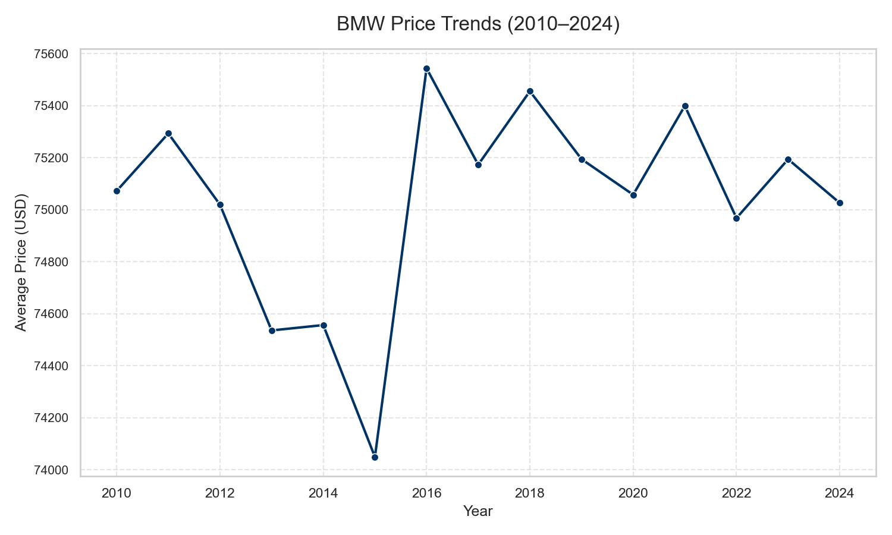
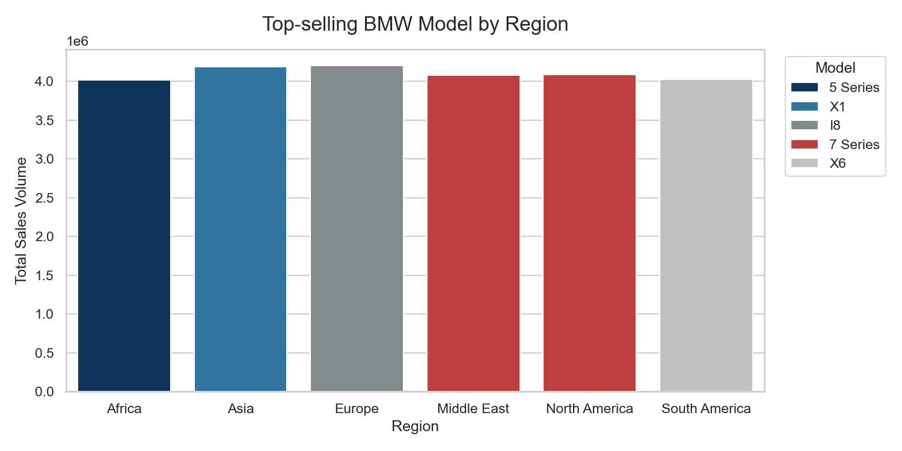
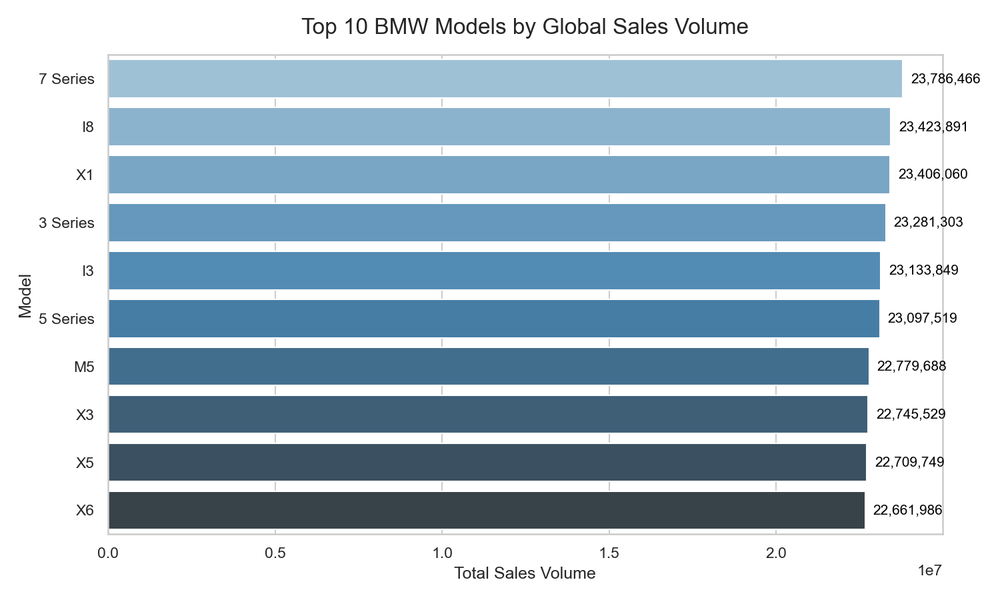
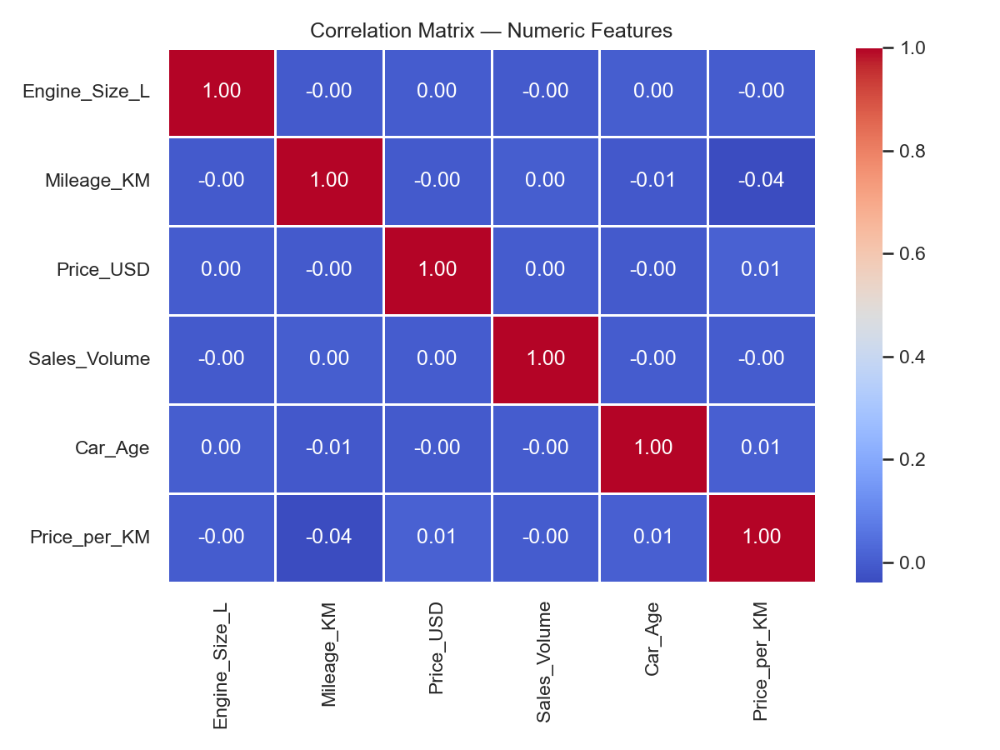
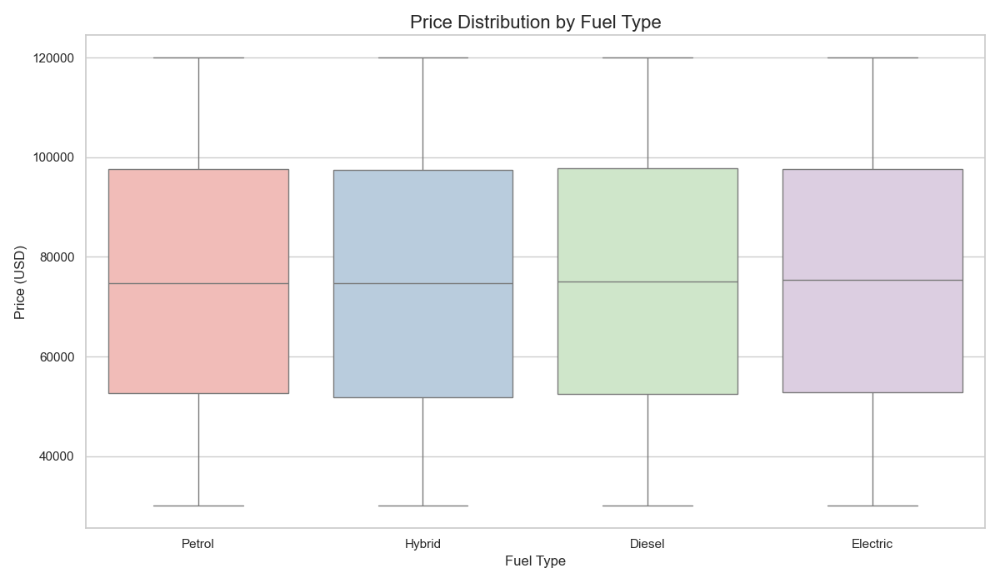

BMW Car Sales Analysis & Price Prediction
Temporal Validation of Market Value
Introduction
Project: BMW Car Sales — Data Analysis & Price Prediction
- Goal: Build a robust, temporally validated model to predict BMW car prices using multi-regional sales data.
- Key Questions Addressed:
- What are the key features influencing BMW car prices?
- Can a Machine Learning model accurately predict prices?
- How stable are these predictions over time (Temporal Validation)?
Data Overview & Setup
Dataset: BMW Worldwide Sales (2010–2024)
- Source: Kaggle (Multi-Regional Sales Data)
- Status: Data has been cleaned, imputed, and One-Hot Encoded.
- Target Variable:
Price_USD (Log-transformed for modeling).
| 0 |
5 Series |
2016 |
Asia |
Red |
Petrol |
Manual |
3.5 |
151748 |
98740 |
8300 |
High |
| 1 |
i8 |
2013 |
North America |
Red |
Hybrid |
Automatic |
1.6 |
121671 |
79219 |
3428 |
Low |
| 2 |
5 Series |
2022 |
North America |
Blue |
Petrol |
Automatic |
4.5 |
10991 |
113265 |
6994 |
Low |
| 3 |
X3 |
2024 |
Middle East |
Blue |
Petrol |
Automatic |
1.7 |
27255 |
60971 |
4047 |
Low |
| 4 |
7 Series |
2020 |
South America |
Black |
Diesel |
Manual |
2.1 |
122131 |
49898 |
3080 |
Low |
| 5 |
5 Series |
2017 |
Middle East |
Silver |
Diesel |
Manual |
1.9 |
171362 |
42926 |
1232 |
Low |
| 6 |
i8 |
2022 |
Europe |
White |
Diesel |
Manual |
1.8 |
196741 |
55064 |
7949 |
High |
| 7 |
M5 |
2014 |
Asia |
Black |
Diesel |
Automatic |
1.6 |
121156 |
102778 |
632 |
Low |
| 8 |
X3 |
2016 |
South America |
White |
Diesel |
Automatic |
1.7 |
48073 |
116482 |
8944 |
High |
| 9 |
i8 |
2019 |
Europe |
White |
Electric |
Manual |
3.0 |
35700 |
96257 |
4411 |
Low |
EDA: Market Trends & Segmentation
|  |
 |
| Observation: The average price shows a clear, non-linear upward trend over time, suggesting market inflation. This justifies the Temporal Validation strategy. |
Observation: Model popularity is highly segmented by region. This confirms that the Region variable is a critical feature for effective price segmentation. |
Detail: The analysis utilized over 50,000 records of multi-regional sales. Regional features were processed using One-Hot Encoding to prevent models from assigning arbitrary ordinal relationships to categories.
Global Market Demand
Global Market Demand: Top 10 Models (2010–2024)
|  |
| Insight:Globally, sales volume is often dominated by core sedan and SUV series (e.g., 3-Series, 5-Series, X3, X5), reflecting high overall market liquidity. |
Impact:Models with high global volume typically exhibit more stable pricing due to consistent demand, which reduces prediction volatility. EDA Detail:This volume data was analyzed before the temporal split to understand the underlying market foundation across all years. |
EDA: Correlation Analysis
Price Relationships
|  |
 |
| Observation: Log-Price shows a strong inverse linear relationship with Car Age (depreciation) and a strong positive correlation with Engine Size (performance/class). |
Observation: Significant differences in the median price across fuel types confirm this categorical feature has strong predictive power and is not independent of the target. |
Detail: Two key features were engineered for this analysis: Car Age (calculated as Current_Year - Model_Year) and Price per KM (calculated as Price_USD / Mileage_KM), both showing significant predictive value.
Modeling Approach
Temporal Validation Strategy (The Key Differentiator)
- Goal: Test model stability and real-world predictive ability.
- Split: - Train Set: All data from 2010–2023.
- Test Set: Data from Year 2024 (The “future” market).
- Model Chosen: Random Forest Regressor (highest predictive power).
- Evaluation: MAE and RMSE are converted back to USD for business interpretability.
Key Price Drivers: Feature Importance
Top 5 Predictors of BMW Price
The Random Forest model identified these key drivers based on Gini Impurity Reduction:
- Price per KM (0.682) - Represents the calculated efficiency/condition ratio; its dominance suggests it captures the residual value most effectively.
- Mileage (KM) (0.318) - Primary measure of vehicle use and wear, directly driving the rate of depreciation.
- Engine Size (L) (0.000018)
- Car Age (0.000015)
- Transmission: Manual (0.000004)
Technical Detail: The model was chosen for its ability to calculate Feature Importance via Mean Decrease in Impurity (Gini). The trained model was serialized and saved as rf_best_model.joblib for future deployment.
Conclusion: Summary of Findings
Answering the Key Questions
- Top Drivers: Price is overwhelmingly driven by engineered features: Price per KM and Mileage (KM).
- Model Success: The Random Forest model demonstrates strong temporal validation, accurately predicting 2024 market prices with an MAE of $531.13.
- Market Insight: Model popularity and sales volume are highly specific to Region.
Business Recommendations
Actionable Insights for Strategy
- Pricing Strategy: Use the model’s feature importance to set pricing guidelines. The low MAE ($531.13) provides high confidence for automated pricing models.
- Inventory Optimization: Focus inventory based on the regional popularity derived from the EDA.
- Future Validation: Re-run the temporal validation annually to ensure the model’s stability and adapt to market shifts.
Thank You
INFO-523 Final Project
- Notebooks:
01_Data_Preparation_and_EDA.ipynb, 02-modeling.ipynb
- Output: Trained model saved as
rf_best_model.joblib.
- Data: Cleaned data saved as
bmw_cleaned.csv and bmw_modeling_ready.csv.